Diffusion 기반 policy는 최근 action 예측을 조건부 denoising 과정으로 정식화함으로써 로보틱스에서 괄목할 만한 성공을 거두었다. 그러나 무작위 Gaussian noise에서 sampling하는 표준 관행은 깨끗한 action을 생성하는 데 여러 번의 반복 단계가 필요한 경우가 많으며, 이로 인해 높은 추론 지연이 발생하여 실시간 제어의 주요 병목이 된다. 본 논문에서는 정보가 없는 noise sampling의 필요성에 의문을 제기하고, 무작위 sampling에서 이전 proprioceptive action의 정보를 활용하는 초기화로 전환하는 새로운 policy 패러다임인 Action-to-Action flow matching(A2A)을 제안한다. proprioceptive action 피드백을 정적인 조건으로 취급하는 기존 방법과 달리, A2A는 과거 proprioceptive 시퀀스를 활용하여 이를 action 생성을 위한 시작점으로서 고차원 latent space에 embedding한다. 이 설계는 로봇의 물리적 동역학과 시간적 연속성을 효과적으로 포착하면서 비용이 많이 드는 반복적 denoising을 우회한다.
광범위한 실험은 A2A가 높은 학습 효율, 빠른 추론 속도, 향상된 일반화 성능을 보임을 입증한다. 특히 A2A는 단 한 번의 추론 단계만으로도 고품질 action 생성을 가능하게 하며, 시각적 교란에 대한 뛰어난 강건성과 보지 못한 구성에 대한 향상된 일반화 성능을 보인다. 마지막으로 A2A를 비디오 생성으로도 확장하여 시간적 모델링에서의 더 폭넓은 범용성을 입증한다. 프로젝트 사이트: https://lorenzo-0-0.github.io/A2A_Flow_Matching.
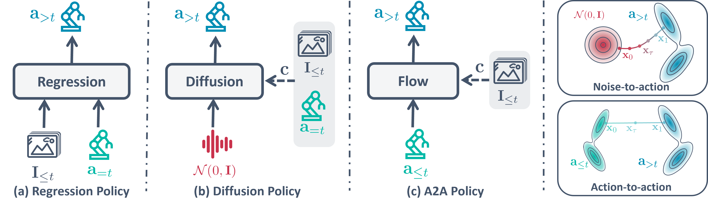
모방학습 아키텍처의 최근 발전은 복잡하고 비정형적인 환경에서 작동하는 로봇 시스템의 역량을 크게 확장했다[2]. 그중에서도 diffusion 기반 policy[7, 14, 16, 24]는 인간 시연에 내재한 다중 모달성을 모델링하는 강력한 패러다임으로 부상했다. 이 방법들은 action 생성을 조건부 denoising 과정으로 정식화한다. 학습 중에는 신경망이 주입된 noise를 예측하도록 학습하고, 추론 시에는 무작위 noise로 초기화된 sample을 반복적으로 denoising하여 실행 가능한 action을 얻는다.
고정밀 및 다중 모달 task에서 강력한 경험적 성능을 보임에도 불구하고, diffusion 모델에는 잘 알려진 한계가 있다. 즉, “처음부터 denoising”하는 패러다임은 상당한 추론 지연을 초래한다[29]. 하나의 action을 생성하는 데 일반적으로 수십 번의 반복적 denoising 단계가 필요하며, 낮은 cycle time과 빠른 피드백이 안정적인 실행에 필수적인 실시간 로봇 제어에서 이는 주요 병목을 만든다.
이 한계를 완화하기 위해 선행 연구는 추론을 가속하도록 diffusion 과정의 초기화를 개선하는 방안을 탐구했다. 예를 들어 [38]는 초기 sampling 분포를 유도하기 위해 RL로 학습한 policy를 제안하며, [33]는 더 유용한 시작점을 식별하기 위해 warm-start 전략을 사용한다. 이러한 접근법은 정보가 없는 Gaussian noise를 데이터 분포에 더 가까운 prior로 대체하며, 흔히 현재 관측을 조건으로 분포 통계량을 예측하는 보조 모델을 이용한다. 이러한 접근법은 효과적이지만 여전히 확률적 noise 초기화에 의존하며 필연적으로 추가적인 모델링 복잡성을 유발한다.
이러한 관찰은 더 근본적인 질문을 제기한다. 로봇 policy는 정말로 무작위 noise에서 sampling하여 생성해야 하는가? Diffusion 모델은 본래 고충실도 이미지 합성과 비디오 생성을 위해 개발되었으며[5, 14, 24, 26, 31, 34], 이 경우 의미 있는 prior가 없기 때문에 생성은 일반적으로 정보가 없는 noise에서 시작한다. 그러나 로봇 제어는 근본적으로 다른 체제에서 작동한다. 현대 로봇은 시스템의 구성과 동역학에 관한 연속적이고 지연이 짧은 피드백을 제공하는 풍부한 상태 센서를 갖추고 있다[19, 21]. 이 구조화된 피드백은 로봇의 현재 물리적 상태 또는 최근 실행 이력을 자연스럽게 encoding하는 강력하고 신뢰할 수 있는 prior를 이루며, 따라서 action 생성을 위한 무작위 noise 초기화의 원리적인 대안을 제공한다[20].
그러나 그림 1의 (a)와 (b)에 나타낸 것처럼, 대부분의 기존 접근법은 현재 proprioceptive state/action과 시각 관측을 단순히 이어 붙인 것을 조건으로 action을 생성하는 regression 또는 diffusion 기반 패러다임 중 하나를 따른다. 이러한 설계는 로봇 motion에 내재한 시간적 연속성을 간과하며, 저차원 proprioceptive 신호를 고차원 시각 표현과 직접 융합할 때 이 신호를 약화하는 경우가 많다. 더욱이 최근 연구는 proprioceptive state에 대한 명시적 conditioning이 공간적 일반화에 악영향을 줄 수 있음을 보여준다[40].
그 결과, 시스템 동역학과 action 추세에 관한 풍부한 과거 정보는 현재 널리 쓰이는 프레임워크에서 대체로 충분히 활용되지 못하고 있다. 주목할 점은 diffusion 모델이 개별 state 사이가 아니라 확률분포 사이의 매핑을 정의한다는 것이다. 이러한 관점은 자연스러운 질문으로 이어진다. 과거 실행 분포와 미래 action 분포 사이에 본질적으로 존재하는 근접성을 활용해 학습 복잡성을 줄이고, policy 생성을 위한 더 짧고 안정적인 transport 경로를 얻을 수 있는가?
이를 위해 본 논문은 action 생성을 정보가 없는 sampling에서 정보에 기반한 초기화로 전환하는 새로운 flow matching 기반 policy 패러다임인 Action-to-Action Flow Matching(A2A)을 제안한다. Diffusion 과정을 표준 Gaussian noise로 초기화하는 선행 접근법과 달리, A2A는 그림 1에 나타낸 것처럼 과거 proprioceptive action 시퀀스를 action 생성의 시작점으로 직접 활용한다. 미세한 motion 패턴과 시간적 의존성을 포착하기 위해 이러한 저차원 action 이력을 고차원 latent space에 embedding한다. 과거 action 분포를 미래 action으로 transport하는 flow를 학습함으로써 A2A는 Gaussian noise에서 출발하는 비용이 많이 드는 반복적 denoising 과정을 우회한다.
본 논문은 시뮬레이션 환경과 실제 로봇 시스템 모두에서 A2A를 광범위하게 평가한다. 경험적으로 본 방법은 탁월한 학습 효율을 보이며 최신 baseline 8개보다 일관되게 우수한 성능을 낸다.
특히 A2A는 vanilla diffusion 방법 및 flow matching 방법보다 각각 최대 20×와 5× 빠르게 추론이 수렴하며, 단 한 번의 추론 단계만으로도 고품질 action 생성을 가능하게 한다.
더욱이 생성 과정을 proprioceptive 이력에 기반하게 하면 시각적 교란에 대한 강건성이 크게 향상되며, 이력 정보를 활용한 초기화는 시간에 걸친 물리적 일관성을 강제함으로써 보지 못한 구성에 대한 일반화 성능을 높인다.
요약하면, 본 논문은 확률적 noise 초기화를 이력 기반 proprioceptive 초기화로 대체하여 로봇 자체의 동역학에 기반한, 정보에 입각한 action 생성을 가능하게 하는 새로운 diffusion 기반 로봇 policy 패러다임을 소개한다. A2A는 latent state 표현을 활용하여 세밀한 motion 구조를 포착하고 무작위 noise에서 반복적으로 denoising하지 않고도 효율적인 action-to-action 전환을 지원한다. 시뮬레이션 및 실제 로봇 환경에서 수행한 광범위한 실험은 본 방법이 학습 효율, 추론 속도, 시각적 교란에 대한 강건성, 보지 못한 구성에 대한 일반화 성능 모두에서 최신 성능을 달성함을 입증한다. 나아가 로봇 비디오 생성에 A2A를 적용할 수 있음을 보여주며, 이는 더 폭넓은 확장 가능성에 대한 유망한 잠재력을 시사한다.
Visuomotor policy는 원시 감각 관측, 일반적으로 고차원 시각 입력과 저차원 로봇 state를 저수준 제어 action으로 직접 매핑하는 로봇 학습 프레임워크이다. Action chunking(ACT)[42]과 같은 초기 접근법은 Transformer[37]를 적용한 conditional variational autoencoder를 사용하여 미래 action 시퀀스를 예측함으로써 세밀한 양팔 조작을 학습했다. Diffusion policy[7]는 action 분포를 score 기반 gradient field[14, 35]로 모델링하여 diffusion 생성 패러다임을 도입했으며, 다중 모달 환경에서 안정성을 크게 향상했다. π 계열[4, 16, 17]과 같은 Vision-Language-Action(VLA) 모델에 사용되는 flow matching[24]은 noise 분포와 action 분포 사이의 직선 확률 경로를 학습하여 생성 과정을 단순화하고자 했다. 더 최근에는 [29]가 고급 모델 아키텍처(예: DiT[30]와 UNet[7]) 및 action chunking 전략[42]의 선택이 regression 방법보다 flow matching의 성공에 더 큰 영향을 미친다고 제시했다.
이러한 성공에도 불구하고 diffusion 방법은 반복적인 다단계 추론의 특성과 복잡한 아키텍처로 인해 계산 비용이 높다. 반대로 vision-to-action model(VITA)[11]은 직접적인 vision-to-action 매핑에 경량 Multi-Layer Perceptron(MLP) backbone을 사용하여 아키텍처의 최소화를 추구한다. 그러나 VITA는 시각 입력에 전적으로 의존하므로 환경의 시각적 distractor에 취약하다. 또한 VITA의 flow space에는 차원 불일치가 존재한다. MeanFlow 기반 policy[10, 13]와 consistency model[23, 36, 39] 같은 최근 연구는 noise-to-action 매핑의 이론적 경계를 최적화함으로써 단일 단계 생성을 로봇 action 예측에 도입하기 시작했다. 이와 달리 A2A는 action의 물리적 연속성을 활용하여 과거 proprioceptive action을 미래 action으로 직접 매핑함으로써 생성 경로를 근본적으로 단축하고 고성능 단일 단계 생성을 가능하게 한다.
이미지 및 비디오 합성에서 초기 noise의 최적화는 생성 품질과 속도를 향상하는 핵심 전략이다[1, 9, 27, 32, 33]. 예를 들어 [1]는 경량 LoRA 모듈[15]을 통해 표준 Gaussian noise를 guidance-free noise space로 매핑하도록 학습함으로써 계산 비용이 많이 드는 guidance 기법의 필요성을 없앤다. 마찬가지로 warm-start diffusion[33]은 deterministic 모델을 사용해 문맥을 바탕으로 초기 Gaussian 분포의, 정보에 기반한 평균과 분산을 제공하여 sampling 경로를 단축한다. 그러나 로보틱스에서 noise 최적화는 거의 연구되지 않았다. [38]는 latent-noise space에서 reinforcement learning을 수행하여 behavioral cloning policy를 조정함으로써 agent가 기반 policy의 weight를 변경하지 않고도 로봇 action을 유도할 수 있게 한다.
Noise-to-data 패러다임의 긴 transport 경로에서 벗어나 [6]는 유용한 초기 분포를 활용하지만, 여전히 heuristic 또는 사전학습 모델에 의존한다는 제약이 있다. 본 논문의 A2A는 action-to-action transport 메커니즘을 도입한다. 깨끗한 과거 데이터를 초기 분포로 직접 사용함으로써 로봇 motion의 물리적 연속성을 활용해 시작점을 고차원 latent space의 target에 훨씬 더 가깝게 배치한다. 이렇게 줄어든 분포 격차는 다단계 refinement의 필요성을 우회하여 실시간 로봇 제어에 최적화된 고충실도 단일 단계 추론을 가능하게 한다.
Robotics 분야에서 널리 채택되고 있다는 점을 고려하여[3, 4, 16], flow matching[24]을 algorithm의 기반으로 채택한다. Flow matching은 source distribution p_0 = N(0, I)를 R^d상의 target data distribution p_1 = p_data로 변환하는 법을 학습하는 simulation-free training objective를 제공한다. p_τ: R^d →R_>0를 τ∈[0, 1]에 대한 time-dependent probability density라 하며, 이는 p_0와 p_1 사이를 보간하는 probability path를 정의한다. 이 path는 다음 ordinary differential equation(ODE)을 통해 time-dependent vector field v: [0, 1] ×R^d →R^d에 의해 생성된다.
dx_τ/dτ = v_τ(x_τ), x_0 ~p_0, (1)
여기서 x_τ∈R^d는 flow time τ에서의 state를 나타낸다.
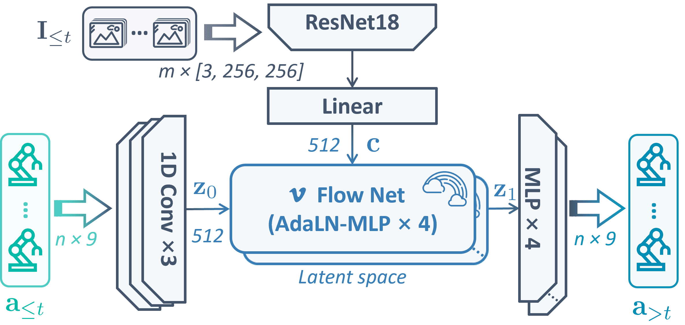
c를 생성하는 condition path. 2) Kernel size가 5인 CNN을 사용해 n-frame history action을 latent starting point z_0로 compress하는 source path. 3) Flow 기반 generation process. AdaLN-MLP block으로 구성된 flow net은 통합된 512-dimensional latent space 내에서 z_0를 target latent z_1로 transport하기 위한 vector field를 예측한다. 마지막으로 residual MLP decoder가 z_1을 future action sequence로 변환한다.Optimal transport displacement map[24]을 채택하며, 이는 x_τ= (1 - τ)x_0 + τx_1로 정식화된다. 목표는 θ로 parameterize된 neural network f_θ(x_τ, τ, c)를 학습하여 conditional vector field를 근사하는 것이며, 여기서 c는 external conditioning(예: visual observation과 proprioceptive state)을 나타낸다. Flow matching loss는 다음과 같이 정의된다.
L_FM = E_τ~U[0,1], x_0~p_0, x_1~p_1 f_θ(x_τ, τ, c) - v_τ(x_τ) ^2. (2)
학습된 f_θ(x_τ, τ, c)를 사용한 inference phase의 sampling은 일반적으로 discretized Euler integration을 통해 수행한다.
Gaussian distribution에서 denoise하는 기존 generation 기반 policy[7, 14, 24]와 달리, A2A는 Figure 그림 1(c)에 나타낸 것처럼 proprioceptive historical action space에서 future action space로 이어지는 policy를 학습하는 것을 목표로 한다. Action a의 formulation은 task에 따라 달라지며 joint position과 end-effector state를 비롯한 다양한 control modality를 수용할 수 있다. Simulation에서는 joint angle을, experiment에서는 end-effector state를 선택하였다. Historical action a_≤t = {a_t-n+1, ..., a_t}1, visual observation I_≤t= {I_t-m+1, ..., I_t}, next action a_> t = {a_t+1, ..., a_t+n}가 주어지며, 여기서 n과 m은 각각 action horizon과 observation horizon을 나타낸다. A2A framework는 공유 latent space Z에서의 conditional flow를 통해 historical action의 distribution을 future action의 distribution으로 직접 변환한다.
Figure 그림 2은 A2A architecture를 상세히 보여 준다. 구체적으로, 제안 architecture는 Convolutional Neural Network(CNN) 기반 autoencoder를 활용하여 action trajectory를 compact latent space Z로 mapping한다. 구체적으로 action encoder E_a와 decoder D_a는 mapping z_0 = E_a(a_≤t)와 reconstruction â_>t = D_a(z_1)을 parameterize한다. 동시에 visual encoder E_I는 multi-modal image stream I_≤t에서 feature를 추출하고, 이 feature를 MLP를 통해 추가로 project하여 global conditioning vector c = MLP(E_I(I_≤t))를 형성한다. 마지막으로 τ∈[0, 1]에 대해 ODE dz_τ/dτ = v_τ(z_τ)를 만족하는 time-dependent vector field v_τ를 통해 Z에서 action-to-action flow를 정의한다.
연속적인 robot motion의 물리적 일관성으로 인해 인접한 action chunk에는 본질적인 유사성이 존재한다. 이러한 segment를 high-dimensional latent space에 추가로 embedding하고 flow matching으로 학습하면, starting point z_0의 distribution이 target z_1과 잘 정렬된다(Figure 그림 8 및 Figure 그림 S6 참조). 이처럼 distributional distance가 감소하면 transport mapping이 크게 단순해져, 경량 MLP도 single-step inference만으로 강력한 성능을 달성할 수 있다.
Historical action a_≤t에 미세한 noise를 가하여 stochasticity를 도입하고 어느 정도의 multimodality를 보존할 수도 있음에 유의한다(Figure 그림 S8). Action-level uncertainty가 존재할 때 A2A는 앞선 action sequence에 본질적으로 의존하기 때문에 성능이 저하된다. Encoding stage 전에 historical action에 미세한 stochastic perturbation을 주입하면 이러한 uncertainty에 대한 generalization capability를 크게 높일 수 있다. Section 4.3.2절에서는 이 mechanism의 효과를 뒷받침하는 empirical evidence를 제시한다.
전체 training objective L_total은 generation accuracy와 physical consistency를 동시에 보장하기 위한 multi-task loss로 정식화한다.
Flow matching loss. 주요 objective는 latent space Z에서 time-dependent vector field f_θ(z_τ, τ, c)를 regression하는 것이다. 이 loss는 model이 latent starting action z_0와 latent target action z_1 사이의 optimal transport path를 학습하도록 보장하며, 즉 다음과 같다.
L_FM = E_τ~U[0,1], z_0, z_1 f_θ(z_τ, τ, c) - v_τ(z_τ, τ, c) ^2. (3)
Equation 식 (3)은 action latent space Z에서 Equation 식 (2)을 구체화한 A2A formulation이다.
Autoencoder reconstruction loss. Latent space Z가 action space의 topological structure를 보존하도록 action autoencoder에 l_1 reconstruction loss를 적용하며, 즉 다음과 같다.
L_AE = E_a_> t a_> t - D_a(E_a(a_> t)) _1. (4)
이 loss는 encoder E_a와 decoder D_a를 regularize하여 action chunk의 high-fidelity reconstruction을 유지하게 한다.
Inference consistency loss. Abstract latent generation과 physical execution 사이의 간극을 해소하기 위해, 기존 연구[11]에서 영감을 받아 inference consistency loss를 도입한다. Inference consistency는 latent space와 original action space 모두에서 ODE로 inference한 action과 ground-truth action을 정렬하는 것을 목표로 하며, 즉 다음과 같다.
L_IC = E_z_hat_1, a_> t z_hat_1 - E_a(a_> t) _1 + λ_0E_z_hat_1, a_> t D_a(z_hat_1) - a_> t _1, (5)
여기서 z_hat_1은 ODE integration으로 얻은 latent vector이고, λ_0∈R_>0는 사용자가 정의한 weight를 나타낸다. 이 objective는 생성된 flow trajectory가 물리적으로 의미 있고 실행 가능한 action으로 변환되도록 보장한다. 기존 연구[11]에서는 L_IC가 latent space collapse를 방지하는 데 핵심적임을 확인하였다.
마지막으로 전체 training objective L_total은 세 weighting coefficient λ_1, λ_2, λ_3 ∈R_>0를 사용하여 다음과 같이 정식화한다.
L_total = λ_1L_FM + λ_2L_AE + λ_3L_IC. (6)
9가지 서로 다른 알고리즘에서 5개 simulation 과제에 대한 성공률(100개 시연, 30 에포크). 최고 결과는 굵게 표시하고, 두 번째로 좋은 결과는 밑줄로 표시한다.
| 방법 | 스텝 | Close Box (%) | Pick Cube (%) | Stack Cube (%) | Open Drawer (%) | Pick-Place Bowl (%) |
|---|---|---|---|---|---|---|
| A2A-Flow | 6 | 92 | 92 | 86 | 92 | 90 |
| VITA | 6 | 88 | 88 | 80 | 90 | 92 |
| FM-UNet | 10 | 82 | 70 | 28 | 34 | 68 |
| FM-DiT | 10 | 58 | 88 | 26 | 28 | 84 |
| DDPM-UNet | 100 | 72 | 60 | 36 | 64 | 66 |
| DDPM-DiT | 100 | 58 | 58 | 16 | 14 | 68 |
| DDIM-UNet | 40 | 70 | 56 | 36 | 64 | 82 |
| Score-UNet | 100 | 36 | 36 | 12 | 0 | 4 |
| ACT | 1 | 82 | 86 | 32 | 80 | 60 |
제안하는 A2A-Flow를 Roboverse 플랫폼[12]의 5개 simulation 과제(ManiSkill[28]의 Stack Cube 및 Pick Cube, RLBench[18]의 Close Box, LIBERO[25]의 Open Drawer 및 Pick-Place Bowl)와 Franka 로봇의 2개 실제 환경 과제(Pick Cube 및 Open Drawer)에서 포괄적으로 평가하며, 이는 그림 3, 그림 5, 그림 6에 제시한다. 성능은 DDPM-UNet[7, 14], DDPM-DiT[14, 30], DDIM-UNet[7, 34], FM-UNet[24], FM-DiT[24, 30], Score-UNet[35], ACT[42], VITA[11]를 포함한 8개의 최첨단 기준 방법과 비교한다. 공정하고 엄밀한 비교를 보장하기 위해 평가하는 모든 방법에서 하이퍼파라미터(예: 청크 크기, 배치 크기)와 네트워크 규모를 가능한 한 최대한 동일하게 설정했다. 평가는 주로 훈련 효율성, 추론 비용, 일반화에 초점을 맞춘다. 모든 실험에서 λ_0 = 0.5, λ_1 = 1, λ_2 = 0.5, λ_3 = 1, n = m = 8 및 배치 크기 32를 사용한다(부록 A.2절).
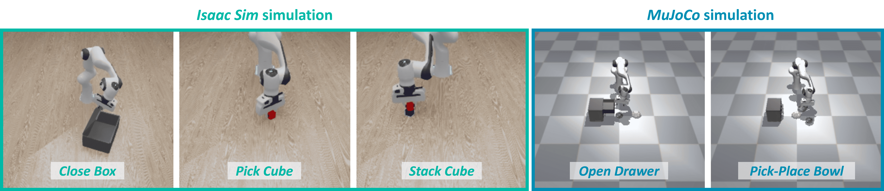
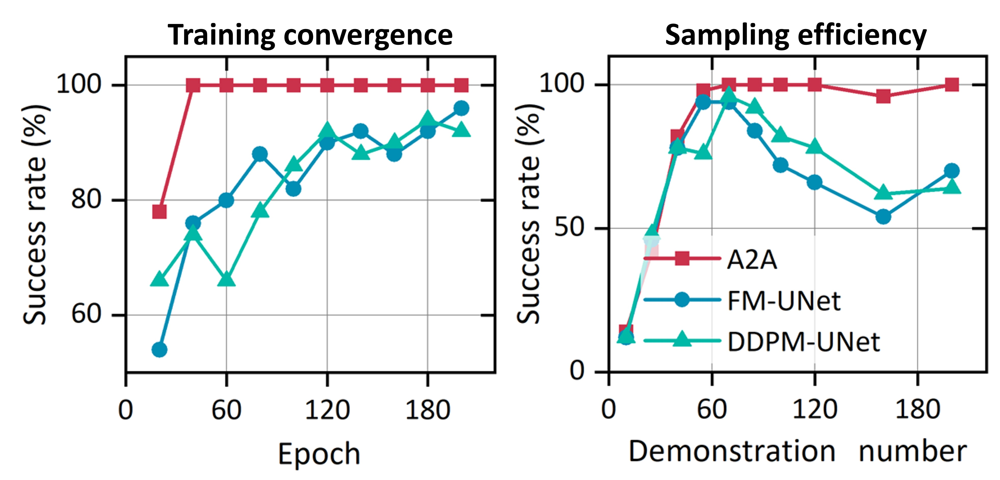
먼저 서로 다른 훈련 데이터 크기와 에포크 수에서 A2A-Flow의 성능을 분석한다. 그림 4는 평가한 모든 방법의 훈련 효율성을 보여준다. 그림 4(왼쪽)에 제시된 것처럼 A2A-Flow는 DDPM-UNet 및 FM-UNet보다 우수한 수렴 속도를 보이며, Close Box 과제에서 크게 제한된 40 훈련 에포크 이내에 안정적인 100% 성공률을 달성한다.
또한 그림 4(오른쪽)의 샘플링 효율성 결과는 시연 수가 증가함에 따라 A2A-Flow가 높은 성능 상한에 빠르게 도달하고 이를 유지함을 보여준다. 이와 대조적으로 DDPM-UNet과 FM-UNet은 모두 눈에 띄는 변동과 더 낮은 안정성을 보인다. 이러한 차이는 Stack Cube 과제의 데이터셋이 증가하면서 trajectory 다양성이 커지는 데서 비롯된 것으로 보이며, 이를 수용하려면 더 큰 모델 용량 또는 더 많은 훈련 에포크가 필요할 수 있다. 이 가설을 검증하기 위해 DDPM-UNet 및 FM-UNet 기준 방법을 추가로 평가한다. 그림 S3에 제시된 것처럼 이들의 성공률은 훈련 에포크가 증가함에 따라 점차 100%로 수렴한다.
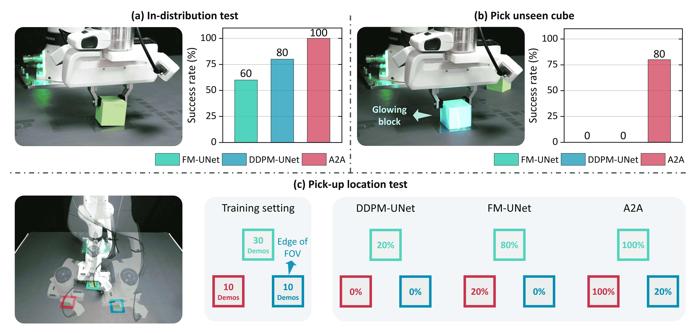
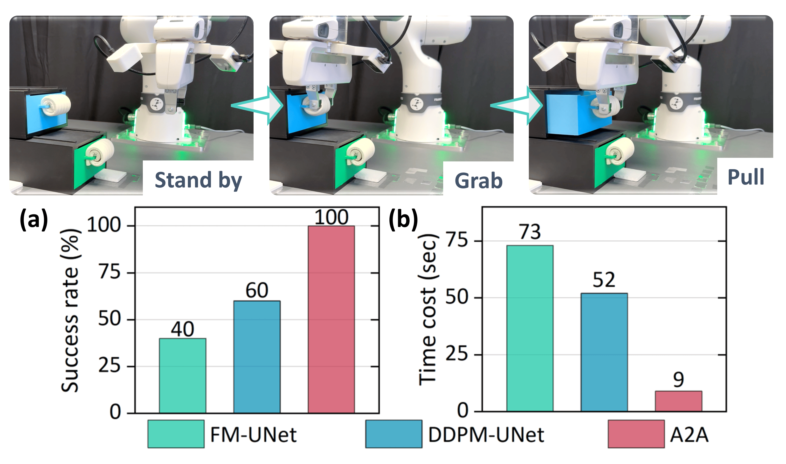
그림 5(a)와 그림 6(a)의 실제 환경 시험은 훈련 trajectory가 30개뿐인 경우에도 A2A-Flow가 100%의 분포 내 성공률을 달성하여 DDPM-UNet과 FM-UNet을 능가함을 추가로 보여준다. 그림 6(b)는 제안하는 알고리즘이 Open Drawer 과제에서 더 짧은 완료 시간을 달성하는 반면, DDPM-UNet과 FM-UNet은 동작 중에 상당한 주저를 보인다는 점을 추가로 보여준다. 또한 집기 위치 시험을 추가로 수행한다. 2개의 집기 위치를 더 추가하며(그림 5(c)), 각 위치에는 시연이 10개뿐이다. A2A-Flow는 빠른 적응과 높은 성공률을 보여주며 새로운 시나리오에서 우수한 데이터 효율성을 입증한다. 시야각(FOV)의 가장자리(오른쪽 아래 위치, 그림 S1)에서도 A2A-Flow는 유효한 성공률을 유지하며, 최적이 아닌 시각 입력에 대한 견고성을 분명히 보여준다.
이러한 결과는 A2A-Flow policy가 특히 훈련 데이터가 제한되고 훈련 에포크 수가 적은 조건에서 우수한 성능을 달성함을 나타낸다.
5개의 서로 다른 과제와 9개 알고리즘에 대한 정량적 결과는 표 1에 요약한다. A2A-Flow는 일관되게 가장 높은 성공률을 달성한다. 마찬가지로 추론 일관성 메커니즘[11]을 도입한 VITA도 경쟁력 있게 높은 성공률을 달성한다. 특히 고급 transformer 아키텍처와 동일한 하이퍼파라미터가 주어졌을 때 회귀 기반 ACT가 생성 기반 방법에 필적하는 성능을 달성한다는 사실을 확인했다. 이러한 관찰은 [29]의 최근 발견과 일치한다.
flow matching에 내재한 효율성을 활용하여, A2A policy가 달성할 수 있는 극단적인 추론 속도를 추가로 조사한다. 먼저 sampling step이 학습 성능에 미치는 영향을 평가한다. 그림 7(왼쪽)에 나타난 것처럼, inference step 수를 늘리면 성공률이 빠르게 향상되지만 4 step을 넘어서면 한계 이득이 크게 감소한다. 그림 7(가운데)와 관련하여, 추론 예산을 단 1 step으로 제한할 경우 성공률은 32 training epoch 이후 90%를 크게 넘어선다.
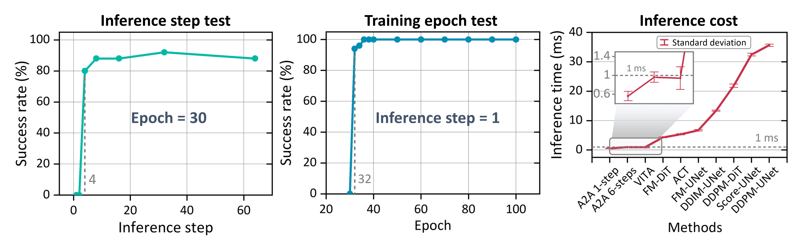
그림 8는 학습 중 one-step inference에서 latent space 표현이 수렴하는 과정을 시각화한다. history latent와 future action latent를 함께 embedding하기 위해 t-SNE를 사용하며, 학습된 flow를 나타내도록 쌍을 이루는 sample을 선으로 연결한다. 학습이 진행됨에 따라 history chunk와 future action chunk 사이의 평균 거리가 크게 감소했다. 또한 이 쌍들을 연결하는 trajectory가 점점 더 평행한 경로로 정렬된다. 이러한 현상은 history latent에서 future latent로의 single-step flow mapping이 실현 가능하다는 강력한 실증적 근거를 제공하며, 새롭게 나타나는 평행성은 학습된 flow의 직선성을 뒷받침한다.
또한 그림 7(오른쪽)에 나타낸 것처럼, 동일한 하드웨어(NVIDIA GeForce RTX 5090 GPU, 32GB VRAM)에서 다양한 알고리즘의 sampling step당 평균 추론 시간을 benchmark한다. sampling step을 극단적으로 압축할 수 있다는 점과 효율적인 MLP 기반 architecture 덕분에 A2A의 추론 latency는 1 ms 미만으로 유지된다. 특히 single-step inference 설정에서는 latency가 인상적인 0.56 ms에 이르며, 이는 고주파 의사결정이 필요한 task에 상당한 잠재력이 있음을 보여준다.
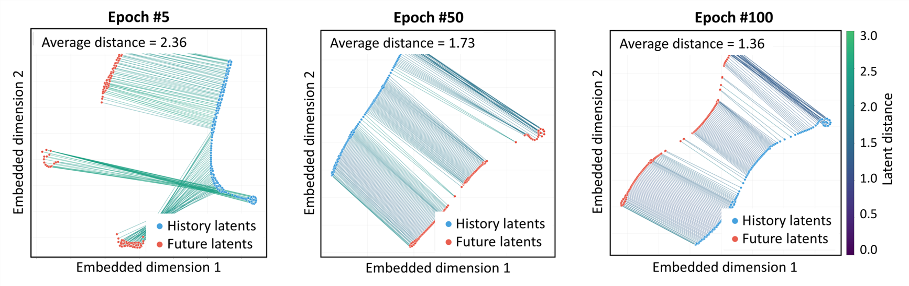
A2A와 VITA [11]는 regression 기반 ACT [42]보다 우수한 추론 속도를 보인다는 점에 주목한다. 이러한 효율성은 sampling epoch 수가 줄어든 것뿐만 아니라 latent space에서 순수 MLP 연산을 수행하는 데서도 비롯된다. 반대로 본 연구의 ACT는 self-attention 및 cross-attention mechanism을 갖춘 고비용 Transformer architecture를 사용한다.
서로 다른 4가지 randomization scene에서의 성공률 비교. 모든 모델은 Level 0에서 100개의 demonstration으로 200 epoch 동안 학습한다. 최고 결과는 굵게 표시하고, 두 번째로 좋은 결과는 밑줄로 표시한다.
| Methods | Level 0 (%) | Level 1 (%) | Level 2 (%) | Level 3 (%) |
|---|---|---|---|---|
| A2A (1 step) | 100 | 20 | 16 | 22 |
| A2A (6 steps) | 100 | 38 | 42 | 38 |
| VITA | 100 | 4 | 2 | 2 |
| FM-UNet | 96 | 6 | 6 | 4 |
| DDPM-UNet | 92 | 2 | 4 | 2 |
| Score-UNet | 94 | 0 | 2 | 0 |
| ACT | 86 | 8 | 2 | 0 |
다양한 시각적 불확실성하에서 제안한 A2A policy의 일반화 성능을 추가로 평가한다. 채택한 플랫폼인 Roboverse [12]는 Close Box task의 장면 무작위화를 난이도가 점진적으로 높아지는 네 수준으로 분류한다. Level 0은 학습 데이터셋으로 사용되며 초기 상자 pose 변화를 포함한다(부록 그림 그림 S4 참조). Level 1은 상당한 배경 texture 무작위화를 도입하며(부록 그림 그림 S5 참조), Level 2는 조명 교란을 추가한다. 마지막으로 Level 3은 카메라 viewpoint 변화를 포함한다. 자세한 무작위화 설정은 부록 A.1절에 제시한다.
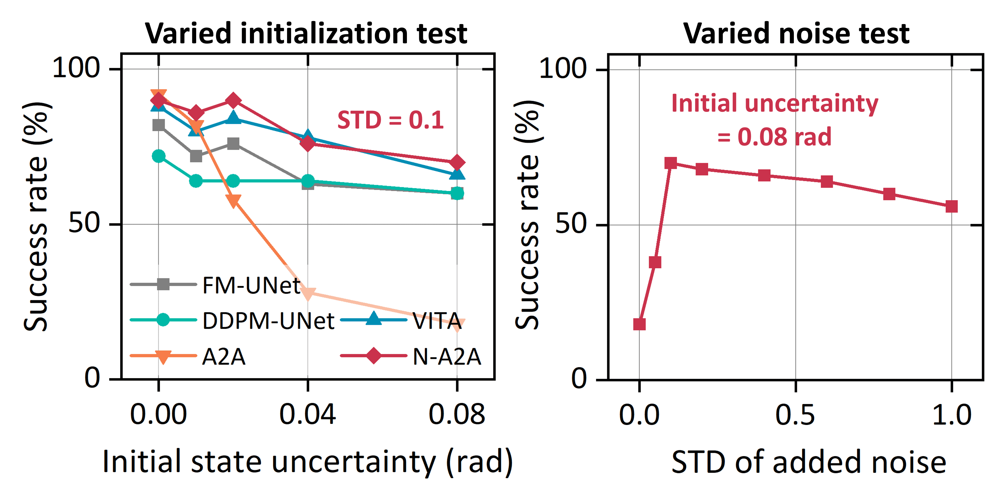
표 표 2은 Level 0부터 3까지 평가한 방법들의 성공률을 제시한다. 특히 Level 1–3을 처음 접하는 경우에도 A2A(6 steps)는 30–40%의 견고한 성공률을 유지하며 모든 baseline 방법을 일관되게 능가한다. 단일 step 추론 regime에서도 A2A는 다른 알고리즘보다 우수한 일반화 성능을 계속 보인다. 그림 그림 5과 같이 실제 환경 시험에서도 시각적 일반화 성능을 검증했다. 목표 cube를 이전에 보지 못한 발광 변형으로 대체하여 심각한 시각적 distractor를 유발한다. 이 경우 baseline들은 완전히 실패하지만, 본 알고리즘은 견고한 80%의 성공률을 유지한다.
이러한 견고성의 근본 원인은 representation entanglement 문제를 완화하는 본 연구의 decoupled 전략에 있다고 주장한다 [22]. proprioceptive feature와 시각 feature를 단순히 이어 붙이는 기존 방법과 달리, 본 연구는 이들을 서로 다른 전략으로 처리하여 저차원 proprioceptive signal이 고차원 signal에 가려지는 것을 방지하고, 그 결과 모델이 각 modality의 상호 보완적인 강점을 더 효과적으로 활용할 수 있게 한다. 구체적으로, 생성 과정을 과거 action에 grounding하면 시간에 따른 물리적 일관성을 강제하므로 시각적 교란에 대한 견고성을 크게 향상할 수 있다. 또한 과거 trajectory에 noise(표준편차 0.02, STD)를 주입하면 Level 1에서 일반화 격차를 20%에서 52%로 더욱 줄일 수 있음을 확인했다.
A2A에서는 후속 action sequence가 이전 sequence에 시간적으로 의존하므로, 과거 sequence의 불확실성에 대한 견고성이 어떠한지라는 자연스러운 의문이 제기된다. 이를 조사하기 위해 그림 그림 S7과 같이 로봇의 초기 pose를 무작위화한다. 그림 그림 9(왼쪽)의 결과는 각 step에서 순수 noise로부터 action을 생성하는 baseline과 비교할 때 A2A가 실제로 action history 내부의 불확실성에 더 민감함을 보여준다. 그러나 과거 action에 소량의 Gaussian noise(표준편차 0.1, STD)를 주입하면 일반화 성능이 크게 향상됨을 확인할 수 있다. 그림 그림 9(오른쪽)은 성공률과 주입한 noise의 강도 사이의 관계를 추가로 보여준다. 결정성과 확률성 사이의 균형을 맞추기 위해 깨끗한 과거 데이터와 Gaussian noise를 최적으로 융합하는 방법은 향후 연구의 흥미로운 방향으로 남아 있다.
아키텍처 설계에 관한 ablation study를 추가로 수행하여 두 가지 근본적인 질문에 답한다. 즉, 생성 패러다임이 결정론적 regression baseline보다 우수한 성능을 제공하는지, 그리고 latent space 내에서 flow matching을 수행하는 것이 원시 action space에서 직접 수행하는 것보다 더 효과적인지를 살펴본다.
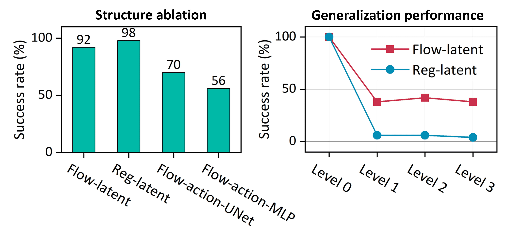
로봇 제어의 맥락에서 생성과 regression의 상대적 장점에 관한 논의가 증가하고 있다 [29]. 여기서는 flow matching objective를 결정론적 regression 접근법으로 대체하는 것도 시도한다. 공정한 비교를 위해 encoder와 latent space 설정을 포함한 다른 모든 아키텍처 구성요소는 엄격히 동일하게 유지한다. 결과는 그림 그림 10(왼쪽)에 제시하며, 여기서 Flow-latent는 latent space 내에서 수행하는 flow matching, 즉 본 연구의 최종 선택을 나타낸다. Reg-latent는 latent space 내에서 수행하는 결정론적 regression을 나타낸다. 두 방법 모두 학습 분포에서 높은 성공률을 달성하며, 이는 최근 연구 결과와 일치함을 확인했다 [29]. 그러나 그림 그림 10(오른쪽)은 생성 접근법이 환경 교란에 훨씬 더 높은 회복력을 보이는 반면, regression 변형은 이전에 보지 못한 시나리오로 일반화하지 못함을 보여준다.
이 격차는 action 입력과 시각 입력의 decoupling에서 비롯될 수 있다. regression 방법에서 더 고차원인 시각 representation과 직접 결합하면 저차원 proprioceptive signal의 이점이 희석될 수 있다.
latent space 없이 수행하는 flow matching을 U-Net backbone과 MLP backbone(A2A와 동일)을 모두 사용하여 추가로 평가한다. 결과는 그림 그림 10(왼쪽)에 제시하며, 여기서 Flow-action-UNet은 U-Net 아키텍처를 사용해 원시 action space에서 직접 수행하는 flow matching을 나타내고, Flow-action-MLP는 MLP 아키텍처를 사용해 원시 action space에서 직접 수행하는 flow matching을 나타낸다. 원시 action space에서의 flow matching은 latent-space 접근법보다 열등한 수렴 성능으로 이어짐을 확인할 수 있다. 그 이유는 latent space의 고차원 representation이 flow의 초기 분포와 목표 분포를 효과적으로 정렬하기 때문이라고 볼 수 있다. 이러한 구조화된 정렬은 더 원활한 학습 과정을 촉진하여, 그림 그림 8 및 그림 S6과 같이 모델이 단일 step 추론 regime에서도 높은 성능을 달성할 수 있게 한다.
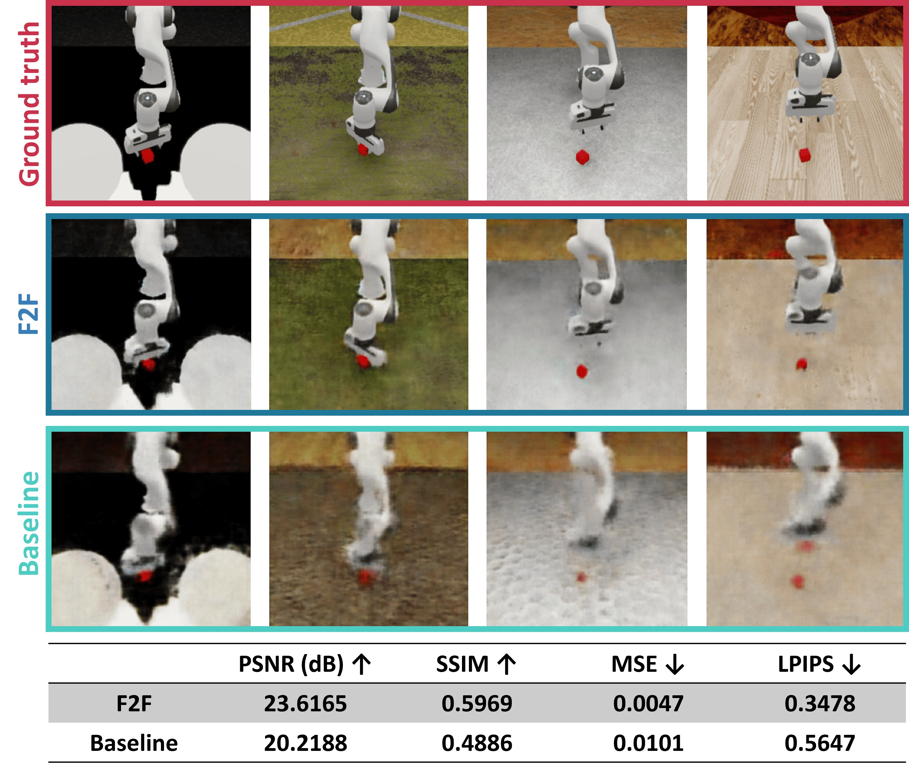
Robotic manipulation과 마찬가지로, 미래 frame 예측 형태의 video generation은 본질적으로 시간적 연속성 과제이다. 고충실도 미래 video 예측은 VLA model의 성능을 향상시킬 수 있다[8, 41]. 본 연구에서는 A2A paradigm의 video generation에 대한 전이 가능성을 더 탐구하며, 이를 이하 Frames-to-Frames flow matching(F2F)이라 한다. Training dataset은 pick cube task의 각 level(Level 0–4)당 100개의 video로 구성되며, test set은 동일한 task의 미관측 시나리오 네 가지로 구성된다. F2F는 연속된 세 frame의 history를 바탕으로 미래 frame 세 개를 예측하도록 설계된다. F2F와 baseline은 모두 500 epoch 동안 학습한다. 구현 세부 사항은 Appendix A.4절를 참조한다. Figure 그림 11에 나타낸 바와 같이, F2F는 동일한 network 구성으로 구현한 regression 기반 baseline보다 현저히 높은 생성 품질을 달성한다. 이 결과는 소규모 model로 달성한 것이지만, F2F paradigm은 더 큰 architecture로 확장할 잠재력이 크다. 향후 연구에서는 A2A의 성능을 더욱 높이기 위해 예측 video를 policy architecture에 통합하는 방안을 더 추구할 것이다.
본 논문에서는 noise 기반 initialization을 action-to-action transport로 대체하는 효율적인 generative paradigm인 A2A를 제안한다. A2A는 연속 motion의 물리적 일관성을 활용하여 시작 distribution과 target distribution을 정렬하며, 이를 통해 경량 MLP가 최소 latency로 높은 success rate를 달성할 수 있게 한다. 다양한 simulation 및 real-world robotic benchmark 전반에서 A2A는 state-of-the-art diffusion 및 flow 기반 policy와 대등하거나 이를 능가하는 동시에 inference를 더 적은 step으로 줄인다. 이 접근법은 diffusion 기반 policy에서 일반적으로 나타나는 계산 병목을 효과적으로 제거한다. Robotics와 video generation을 넘어, 이 framework는 본질적으로 다양한 연속 시간 과제에 적합하며, 순차적 연속성을 특징으로 하는 domain에서의 잠재력은 향후 탐구할 유망한 방향으로 남아 있다.
A2A는 action의 물리적 연속성에 기반하므로, 부드럽고 연속적인 control signal이 지배적인 task에서 가장 효과적이다. Binary gripper open/close command와 같은 discrete 또는 switch형 action dimension에서는 이러한 연속성 prior가 제공하는 이점이 제한적이다. 또한 현재 objective는 여러 loss-weighting coefficient를 수동으로 tuning해야 한다. Adaptive loss weighting과 hybrid continuous-discrete action space 지원은 향후 연구의 유망한 방향으로 남겨 둔다.
평가 대상 method의 robustness를 체계적으로 평가하기 위해, simulation environment에 stochastic perturbation을 도입하는 Roboverse의 계층적 generalization level을 활용한다. 이 절에서는 Level 0(object randomization), Level 1(+background randomization), Level 2(+lighting randomization), Level 3(+camera viewpoint randomization)의 구성을 상세히 설명한다.
Level 0은 Figure 그림 S4에 나타낸 것처럼 초기 object position의 randomization을 도입한다. 이는 평가 대상 algorithm의 training set 역할을 한다.
Level 1은 Figure 그림 S5에 나타낸 것처럼 주로 environment background의 randomization에 초점을 맞춘다. 이 level은 task와 무관한 visual distractor에 대한 policy의 robustness를 평가하도록 설계된다.
Level 2는 lighting randomization을 더 추가한다. Primary DiskLight(12k-45k intensity), auxiliary SphereLight(5k-20k intensity), ambient preset을 사용해 illumination을 randomize한다. Parameter에는 2500K부터 6500K까지의 color temperature, ceiling light에 대한 ±15^∘의 directional jitter, 다양한 shadow pattern을 생성하기 위한 sphere light의 ±0.5m(lateral/longitudinal) 및 ±0.3 m(vertical) positional offset이 포함된다.
Level 3은 camera viewpoint randomization을 추가로 구현한다. Camera extrinsic은 lateral/longitudinal shift에 대해 ±20cm의 delta 범위 내 uniform distribution을 사용하여 perturb한다. Vertical shift는 위쪽 방향의 0부터 10 cm 범위로 제한한다.
모든 simulation과 experiment에 사용하는 training hyperparameter는 Table 표 S1에 나타낸 것처럼 동일하게 설정한다. Roboverse platform의 표준 ACT 구현은 약 60M개의 parameter로 구성되며, 이는 DDPM-UNet(≈ 28M)의 거의 두 배임에 유의한다. 공정한 비교를 위해 ACT의 Transformer backbone을 수정하여 parameter 수를 절반으로 줄였고, 그 결과 평가한 모든 baseline에서 model scale을 정렬하였다.
Training hyperparameter.
| Hyperparameter | 값 |
|---|---|
| n | 8 |
| m | 8 |
λ_0 |
0.5 |
λ_1 |
1 |
λ_2 |
0.5 |
λ_3 |
1 |
| Batch size | 32 |
Real test에서는 A2A를 Franka robotic platform에 deploy하며, training parameter를 simulation baseline과 완전히 동일하게 유지한다. Simulation environment와의 핵심적인 차이는 dual-view visual input을 사용한다는 것이며, 그 setup은 Figure 그림 S1에 나타낸다.
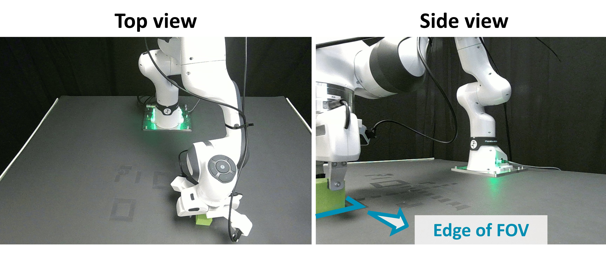
Figure 그림 S2는 F2F algorithm의 architectural framework를 보여 주며, historical frame sequence에서 future prediction으로의 전환을 나타낸다. Historical frame I_≤t를 ResNet18 backbone과 VAE head를 사용해 512-dimensional latent space로 encode하여 initial state z_0를 얻는다. 4개 layer와 4개 attention head로 구성된 Flow Net Transformer는 z_0를 target latent z_1에 mapping하는 vector field v를 학습한다. 이어서 5-layer convolutional upsampling decoder를 통해 future frame I_> t를 reconstruct한다. Baseline으로는 historical sequence로부터 future frame을 직접 예측하는 deterministic regression model을 사용한다. 공정한 비교를 위해 flow matching training objective를 생략한 것을 제외하면 baseline은 F2F와 동일한 architecture를 유지한다.
평가 중에는 서로 보완적인 네 가지 metric인 Peak Signal-to-Noise Ratio(PSNR), Structural Similarity Index Measure(SSIM), Mean Squared Error(MSE), Learned Perceptual Image Patch Similarity(LPIPS)를 사용하여 예측 성능을 평가한다.
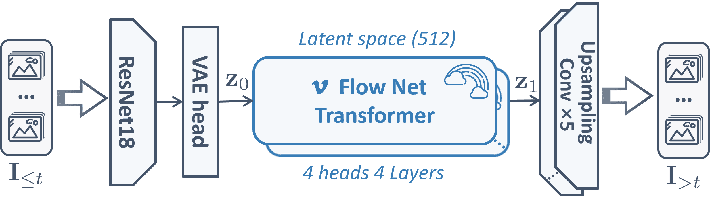
I_> t는 convolutional upsampling block을 통해 생성된다.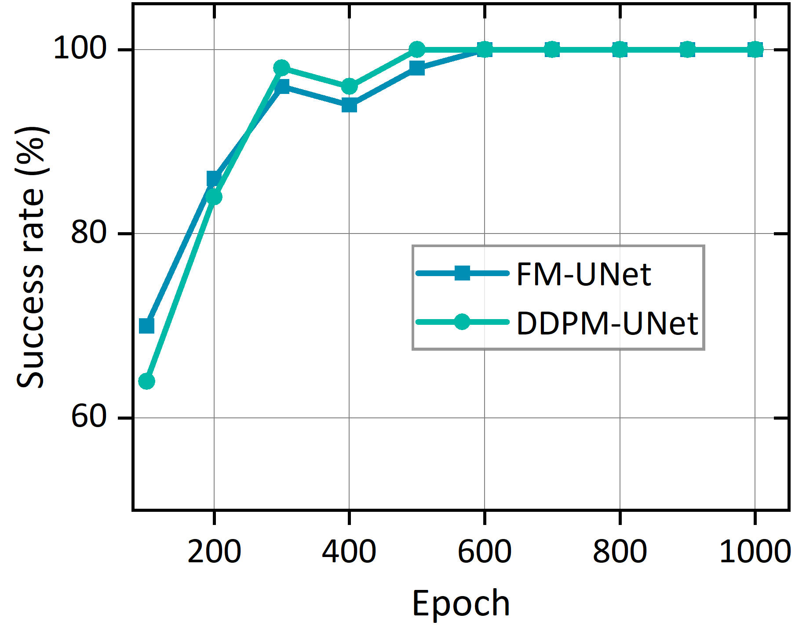
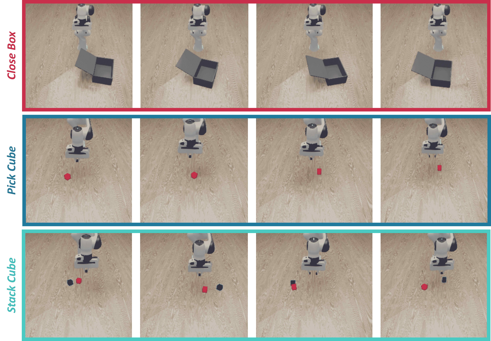
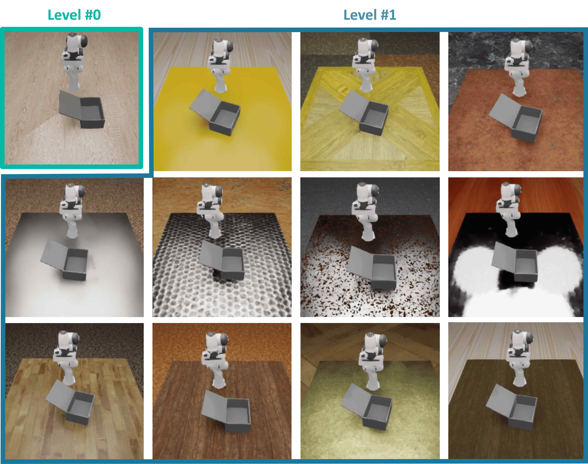
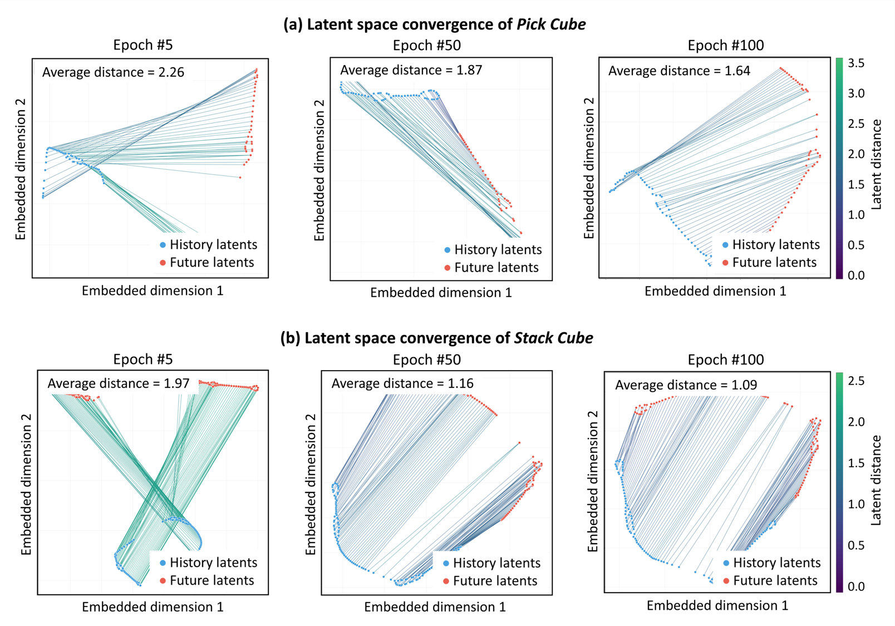
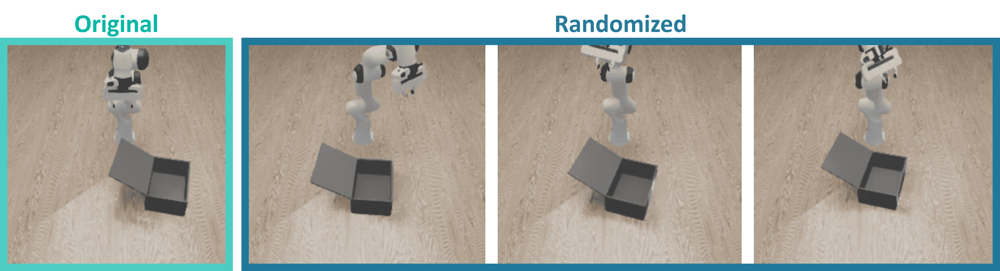
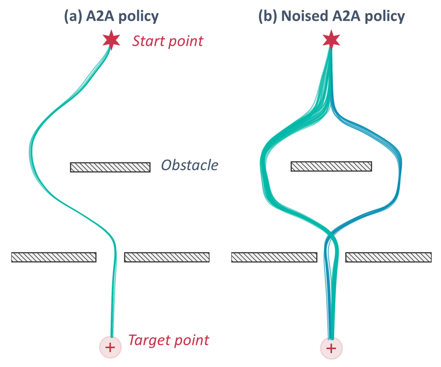
⋆)에서 target(빨간색 ⊕)에 도달해야 하는 2D navigation task이며, 위쪽 장애물의 왼쪽 또는 오른쪽으로 이동하는 본질적으로 multimodal한 optimal solution이 존재하는 setting이다. (a) A2A policy는 사실상 deterministic하다. Multimodal training data에도 불구하고 rollout이 단일 mode로 collapse한다. (b) Historical action a_≤t에 std σ=0.02인 zero-mean Gaussian noise를 추가하면 task success를 희생하지 않고 이러한 determinism이 깨져, policy가 여러 rollout에 걸쳐 두 mode를 모두 표현할 수 있다. 이는 학습된 policy의 multimodality를 보존하기 위한 경량 mechanism으로 action perturbation을 채택한 본 연구의 design choice를 입증한다.Closed-loop robustness를 높이기 위해, a_≤t는 이전에 command한 action이 아니라 proprioceptive feedback으로부터 추론한 실제로 실행된 action의 history를 나타내며, 이는 불완전한 low-level tracking을 고려한 것이다. ↩
공식 프로젝트 페이지의 영상 13개를 원본 URL과 함께 보존했다.
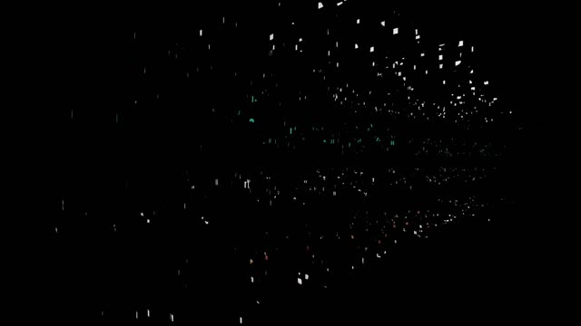
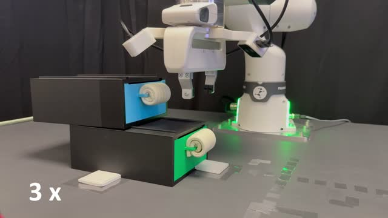
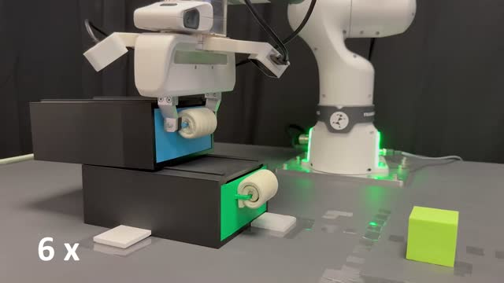
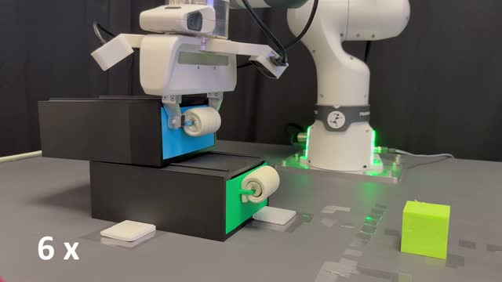
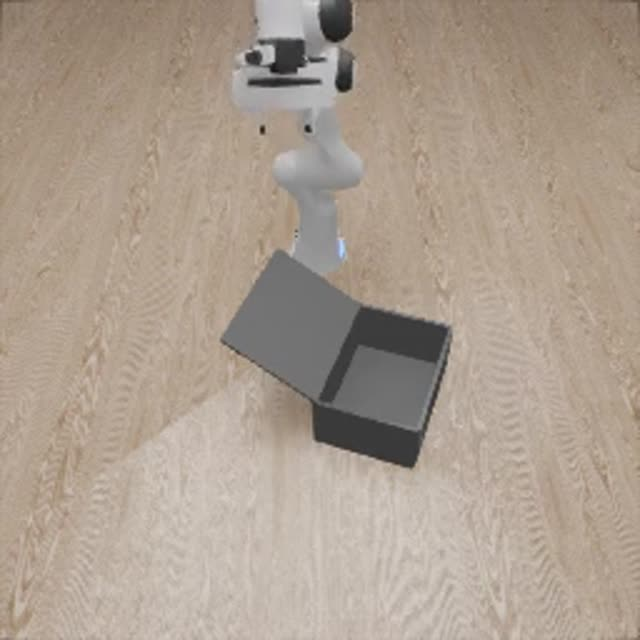
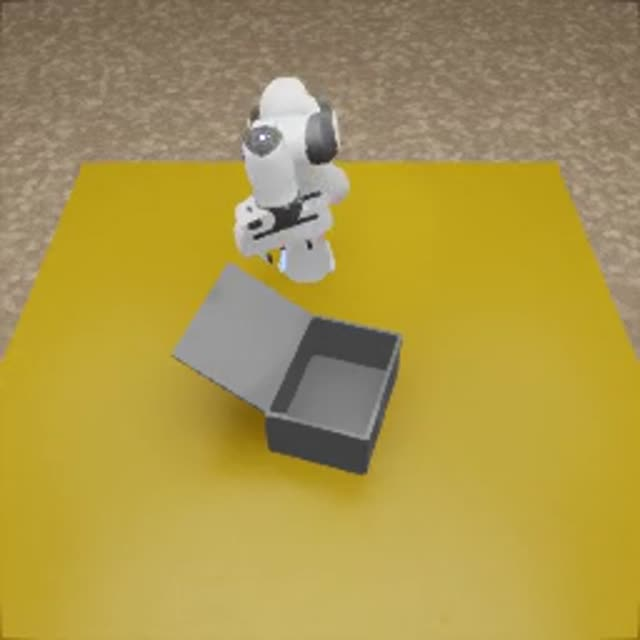
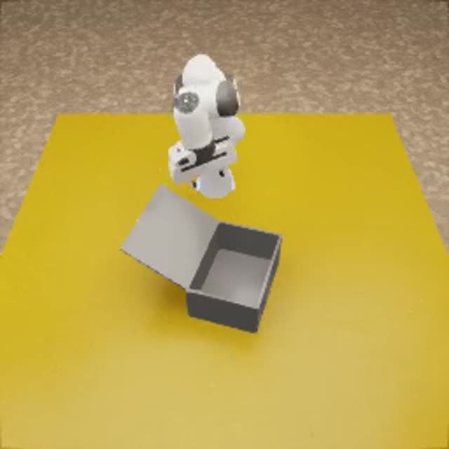
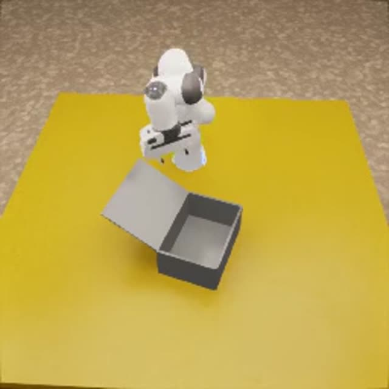
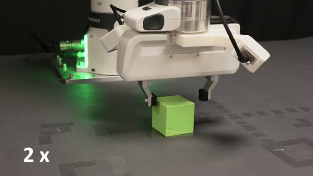
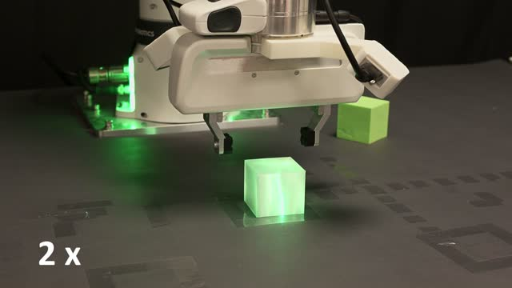
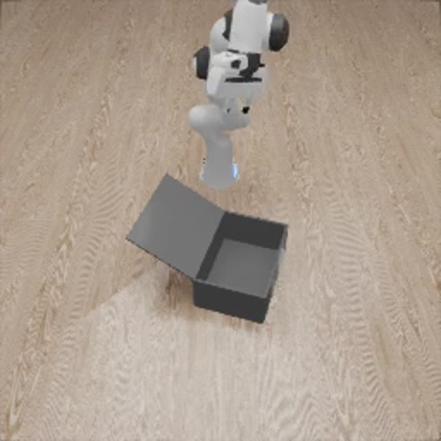
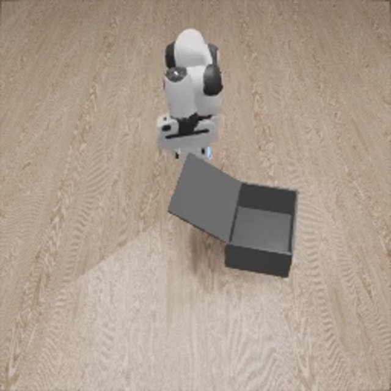
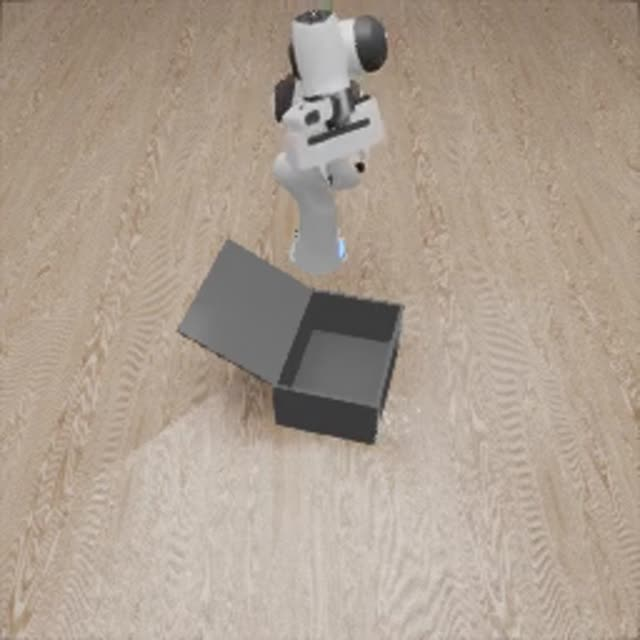